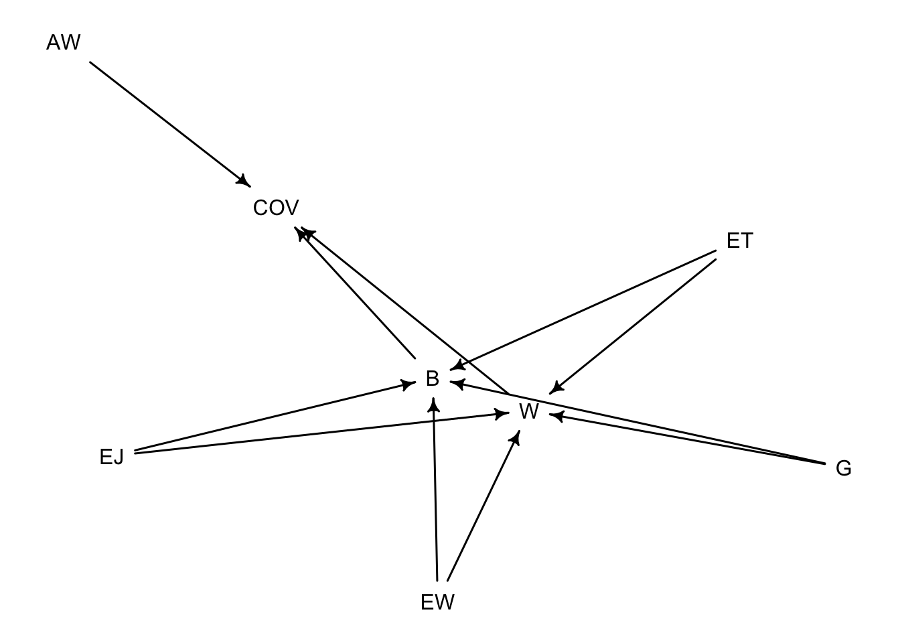
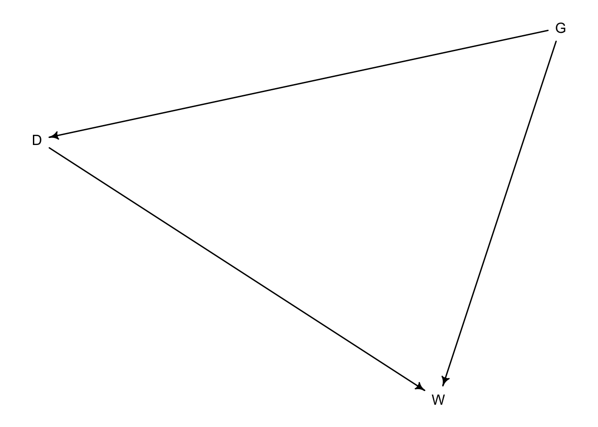

suppressPackageStartupMessages(library(dagitty))
suppressPackageStartupMessages(library(rethinking))
suppressPackageStartupMessages(library(magrittr))
suppressPackageStartupMessages(library(tidyverse))Gamification BDA
Introduction
Software testing is an integral part of software development. Developers incorporate tests from low-level unit tests to high-level system tests and GUI-based tests. GUI-based tests can verify a system’s behavior through interactions with its GUI the same way a user would. One approach to increase the engagement and motivation of people performing a task is Gamification, where elements originated in games are applied in a non-gaming context. In the context of exploratory GUI-based testing, Gamification could improve testers’ engagement and therefore improve the outcome of test activities.
Coppola et al. [1] conducted an experiment with 144 participants to investigate how Gamification would impact the effectiveness and efficiency of exploratory GUI testing.
In this project, I perform a (re-)analysis of the impacts of Gamification for exploratory GUI testing using Bayesian Data Analysis (BDA). Input for this analysis is the replication package from the experiment [1].
Prerequisites
Directed Acyclic Graph (DAG)
A DAG helps us to understand the relationships between the different variables visually.
- G: Gamification approach was used; value = {true, false}
- EJ: Experience in Java; value = {“<1 year”, “1-3 years”, “>3 years”}
- EW: Experience in web development; value = {“<1 year”, “1-3 years”, “>3 years”}
- ET: Experience in software testing; value = {“<1 year”, “1-3 years”, “>3 years”}
- W: Inspected widgets
- B: Identified bugs
- COV: Test coverage
- EF: Effectiveness of exploratory testing
- AW: Average number of widgets on a page
dag <- dagitty("dag {
G -> W
G -> B
EJ -> W
EJ -> B
EW -> W
EW -> B
ET -> W
ET -> B
W -> COV
B -> COV
AW -> COV
COV -> EF
}")
drawdag(dag)
Assumptions:
- G -> W: Using Gamification encourage testers to inspect more widgets
- G -> B: Using Gamification encourage testers to identify more bugs
- EJ -> W: Experience in the used programming language will improve the inspection rate of widgets
- EJ -> B: Experience in the used programming will identify more bugs
- EW -> W: Experience in the technology of the SUT improves the inspection rate of widgets
- EW -> B: Experience in the technology of the SUT improves the identification of bugs
- ET -> W: Experience in software testing improves the inspection rate of widgets
- ET -> B: Experience in software testing improves the identification of bugs
- W -> COV: More inspected widgets increase the test coverage
- B -> COV: More identified bugs increase the test coverage
- AW -> COV: Average number of widgets on a page influence the test coverage of exploratory tests
- COV -> EF: More test coverage improves the effectiveness of exploratory tests
Building blocks
A causal DAG is always built using one or more of the four types of relations: Fork, Pipe, Collider, and Descendant.
Fork: In a fork relationship, a variable (G) is the cause of B and W, e.g., B <- G -> W. Here B and W stay independent
Pipe: In a pipe, variables influence the next element in the pipe, e.g., B -> COV -> EF. B influences COV, which influences EF. Conditioning on COV would block the information flow between B and EF.
Collider: In this DAG, an example of a collider is the EJ -> W <- EW. A relationship between EF and WE only appears if you condition on W; otherwise, there will be no association between EJ and WE.
Descendent: The DAG consists of multiple descendent relationships, e.g., AW -> COV <- B; COV -> EF. A descendent (EF) is influenced by another variable (COV).
DAG simpified version
The presented DAG would require a multi-level model and a general more complex approach to investigate the impact of Gamification on the effectiveness of tests. For this reason, I simplified the DAG as a starting point for the analysis. In the following DAG, the amount of inspected widgets (W) serves as a proxy to understand the impact of Gamification.
dag <- dagitty("dag {
G -> W
EJ -> W
EW -> W
ET -> W
}")
drawdag(dag)
Estimating probability distributions
G ~ beta-binomial(n, p, θ)
EJ, WE, ET ~ log-normal(µ, σ)
W ~ possion(λ) ``
Import data from the replication package
Load raw data from replication package.
demographicRaw <- read.csv(file = 'data/demographic.csv', header = TRUE, sep = ';', nrows=152)
withGameRaw <- read.csv(file = 'data/gamified_sessions.csv', header = TRUE, sep = ';', nrows=152)
withoutGameRaw <- read.csv(file = 'data/non_gamified_sessions.csv', header = TRUE, sep = ';', nrows=152)Cleanup demographic data by replacing string representations of the experience levels with ordered categorical numbers (1,2, and 3). The differences between categorical numbers are not equal, e.g., a person with 3 years of experience with testing will not result in 3 times better outcome compared to one with 1 year of experience.
demographic <- subset(demographicRaw, select = c(Students.ID, expertise.in.java, expertise.in.sw.testing, expertise.in.web.app.development))
names(demographic) <- c("studentId", "expJava", "expTest", "expWeb")
expLessThan1Year = 1
expBetween1and3Years = 2
expMoreThan3Years = 3
expAsNumeric <- Vectorize(vectorize.args = "expLevel", FUN = function(expLevel) {
experience = tolower(expLevel)
result = switch(
experience,
"less than one year"=expLessThan1Year,
"between one year and three years"=expBetween1and3Years,
"more than three years"=expMoreThan3Years,
0
)
})
# transform strings to numerical values
demographic[2:4] <- lapply(demographic[2:4], expAsNumeric)
# transform numerical values to categorical values
demographic[2:4] <- lapply(demographic[2:4], factor)withGame <- subset(withGameRaw, select = c(Students.ID, X..Interactions.G))
names(withGame) <- c("studentId", "widgetsInspected")
withGame['gamification'] <- 1
withoutGame <- subset(withoutGameRaw, select = c(Students.ID, X..Interactions))
names(withoutGame) <- c("studentId", "widgetsInspected")
withoutGame['gamification'] <- 0
game_merged <-rbind(withGame, withoutGame)
game_merged <- merge(game_merged, demographic, by="studentId")Estimating model parameters
Bases on my understanding of the field of GUI-based testing, I estimate average values for the parameters, which makes those weakly informative priors.
For alpha, the general expectation to interact with widgets of a system I look for a value ~ 25.
for (i in 1:5) {
am <- mean(rlnorm(1000, i, 1))
print(paste("meanlog", i, ":", round(am)))
}[1] "meanlog 1 : 5"
[1] "meanlog 2 : 13"
[1] "meanlog 3 : 34"
[1] "meanlog 4 : 89"
[1] "meanlog 5 : 250"for (i in c(2.2, 2.4, 2.6, 2.8)) {
am <- mean(rlnorm(1000, i, 1))
print(paste("meanlog", i, ":", round(am)))
}[1] "meanlog 2.2 : 15"
[1] "meanlog 2.4 : 19"
[1] "meanlog 2.6 : 22"
[1] "meanlog 2.8 : 26"lnorm(2.6, 1) seems to be a good candidate for alpha.
N <- 100
curve(dlnorm(x,2.6,1), from = 0, to=N, n=N, xlab="N", ylab = "dlnorm(3, 1)", col = "blue")For the different experience levels (ET, EW, ET), I make the following assumptions:
- The mean value for experience with Java is 2 years with a standard deviation of 1 year.
- The mean value for experience with web development is 2 years with a standard deviation of 1 year.
- The mean value for experience with testing is 1.5 years with a standard deviation of 1 year.
- The impact of Gamification should be less then from experience in Java, web development, or testing.
b_EJ <- rlnorm(N, 2, 0.5)
b_EW <- rlnorm(N, 2, 0.5)
b_ET <- rlnorm(N, 1.5, 0.5 )
b_G <- rlnorm(N, 1, 0.5 )The Gamification parameter has a binomial distribution and are either 1 or 0.
b_G <- dbinom(N, 1, 0.5)set.seed(2023)
N <- 100
a <- rlnorm(N, 2.6, 1)
b_EJ <- rlnorm(N, 2, 0.5)
b_EW <- rlnorm(N, 2, 0.5)
b_ET <- rlnorm(N, 1.5, 0.5 )
b_G <- rlnorm(N, 1, 0.5)
plot( NULL , xlim=c(0,3) , ylim=c(0,100), ylab = "Interactions with Widgets" )
for (i in 1:N) {
curve(a[i] + b_EJ[i]*x + b_EW[i]*x + b_ET[i]*x + b_G[i]*x, col = "blue", add = TRUE)
}
The predictor values for the first attempt of a model look promising since there are not scattered too much. Reducing the standard deviation results in a more narrow range of values.
set.seed(2023)
N <- 100
a <- rlnorm(N, 2.6, 0.4)
b_EJ <- rlnorm(N, 2, 0.4)
b_EW <- rlnorm(N, 2, 0.4)
b_ET <- rlnorm(N, 1.5, 0.4 )
b_G <- rlnorm(N, 1, 0.4)
plot( NULL , xlim=c(0,3) , ylim=c(0,100), ylab = "Interactions with widgets" )
for (i in 1:N) {
curve(a[i] + b_EJ[i]*x + b_EW[i]*x + b_ET[i]*x + b_G[i]*x, col = "blue", add = TRUE)
}
Model
The model that shall describe how Gamification impacts the interactions with widgets is m3. Additionally, models m1 and m2 were created to see the impact of α.
W ~ possion(λ)
Model 1: log(λ) <- α
Model 2: log(λ) <- α + βg*gamification
Model 3: log(λ) <- α + βej*EJ + βew*EW + βet*ET + βg*gamification
m1 <- ulam(
alist(widgetsInspected ~ dpois(lam),
log(lam) <- alpha,
alpha ~ dlnorm(2.6, 0.4)
), data=game_merged,
chains=4, # number of independent chain to sample from
log_lik = TRUE # if TRUE ULAM computes values for PSIS and WAIC
)precis(m1, depth=2) mean sd 5.5% 94.5% n_eff Rhat4
alpha 4.854779 0.005176709 4.846716 4.863131 680.6048 1.004452m2<- ulam(
alist(widgetsInspected ~ dpois(lam),
log(lam) <- alpha + b_G*gamification,
alpha ~ dlnorm(2.6, 0.4),
b_G ~ dlnorm(1, 0.4)
), data=game_merged, chains=4, log_lik = TRUE
)precis(m2, depth=2) mean sd 5.5% 94.5% n_eff Rhat4
alpha 4.7900877 0.007377442 4.778279 4.8016833 470.6433 1.009661
b_G 0.1252739 0.009944860 0.109400 0.1416303 363.0923 1.014149m3 <- ulam(
alist(widgetsInspected ~ dpois(lam),
log(lam) <- alpha + b_EJ*expJava + b_EW*expWeb + b_ET*expTest + b_G*gamification,
alpha ~ dlnorm(2.6, 0.4),
b_EJ ~ dlnorm(2, 0.4),
b_EW ~ dlnorm(2, 0.4),
b_ET ~ dlnorm(1.5, 0.4),
b_G ~ dlnorm(1, 0.4)
), data=game_merged, chains=4, log_lik = TRUE
)precis(m3, depth=2) mean sd 5.5% 94.5% n_eff Rhat4
alpha 4.37818531 0.020309787 4.34601305 4.41146275 1223.945 1.002397
b_EJ 0.18980600 0.009767010 0.17423123 0.20527054 1423.254 1.001523
b_EW 0.01793723 0.002532670 0.01407999 0.02215322 1819.917 1.001086
b_ET 0.03652644 0.005329249 0.02848475 0.04539120 1782.183 0.998887
b_G 0.12628794 0.009808516 0.11077101 0.14143065 1561.875 1.000076n_eff is an estimation of the number of independent samples [2].
Rhat is an indicator of the convergence of the Markov chains to the target distribution and should approach 1.0 [2].
Both n_eff and Rhat4 values are in an expected value range.
When comparing the three models m3 has all of the weights (~1), which indicates a strong support for the experience factors.
compare(m1, m2, m3, func = PSIS) PSIS SE dPSIS dSE pPSIS weight
m3 20179.36 2278.396 0.0000 NA 234.05348 1.000000e+00
m2 20328.44 2365.881 149.0837 358.2261 145.37713 4.235266e-33
m1 20372.72 2361.241 193.3668 420.7575 80.09241 1.025507e-42References
[1] Coppola, R., Fulcini, T., Ardito, L., Torchiano, M. & Alégroth, E., Gamification: the next Silver Bullet for Exploratory GUI Testing? (in revision)
[2] McElreath, R. (2020). Statistical rethinking: A Bayesian course with examples in R and Stan.